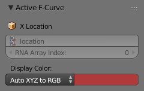
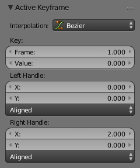

Tính Chất -- Properties¶
Active F-Curve Panel¶
Tham Chiếu -- Reference
| Bảng -- Panel: |
|---|

Active F-Curve panel.
This panel displays properties for the active F-Curve.
- Channel Name
- ID Type + Channel name (X Location).
- Đường Dẫn RNA -- RNA Path
- RNA Path to property + Array index.
- Chế Độ Màu -- Color Mode
Color Mode for the active F-Curve.
- Tự Động Cầu Vồng Hóa -- Auto Rainbow
- Increment the hue of the F-Curve color based on the channel index.
- Tự Động XYZ Sang RGB -- Auto XYZ to RGB
- For property sets like location XYZ, automatically set the set of colors to red, green, blue.
- Người Dùng Định Nghĩa -- User Defined
- Define a custom color for the active F-Curve.
Active Keyframe Panel¶
Tham Chiếu -- Reference
| Bảng -- Panel: |
|---|

Active Keyframe panel.
- Nội Suy -- Interpolation
- Set the forward Chế Độ Nội Suy -- Interpolation Mode for the active keyframe.
- Chậm Rãi -- Easing
- See Thể Loại Chậm Rãi -- Easing Type.
- Khóa -- Key
- Khung Hình -- Frame
- Set the frame for the active keyframe.
- Giá Trị -- Value
- Set the value for the active keyframe.
- Left/Right Handle
Set the position of the left/right interpolation handle for the active keyframe.
- Loại Tay Cầm -- Handle Type
- See Handle Types.
Tính Chất của Góc Nhìn -- View Properties¶
Tham Chiếu -- Reference
| Bảng -- Panel: |
|---|

View Properties.
- Hiển Thị Con Trỏ -- Show Cursor
- Toggles the visibility of the 2D Cursor.
- Con Trỏ từ Lựa Chọn -- Cursor from Selection
- Places the 2D Cursor at the midpoint of the selected keyframes.
- Vị Trí Con Trỏ -- Cursor Location
- Moves the cursor to the specified frame (X value) and value (Y value).
- Vào Khóa -- To Keys
- Applies the current location of the 2D cursor to the selected keyframes.
Xem thêm
Graph Editor's Trình Đơn Góc Nhìn -- View Menu.